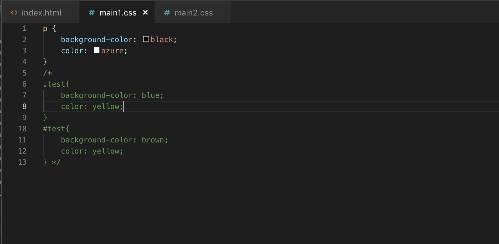
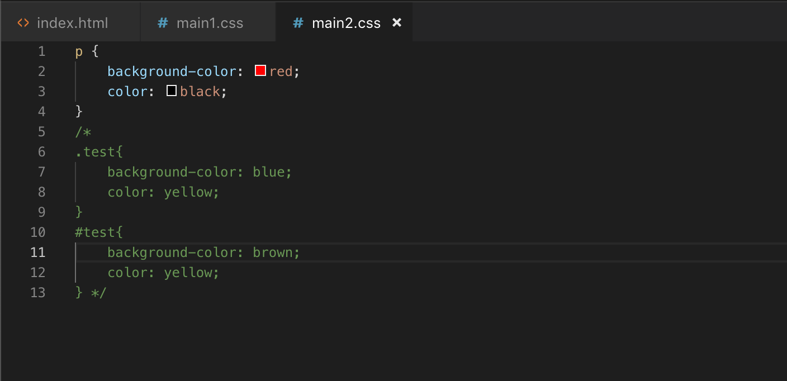
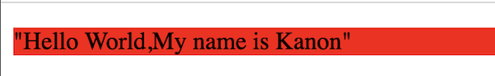
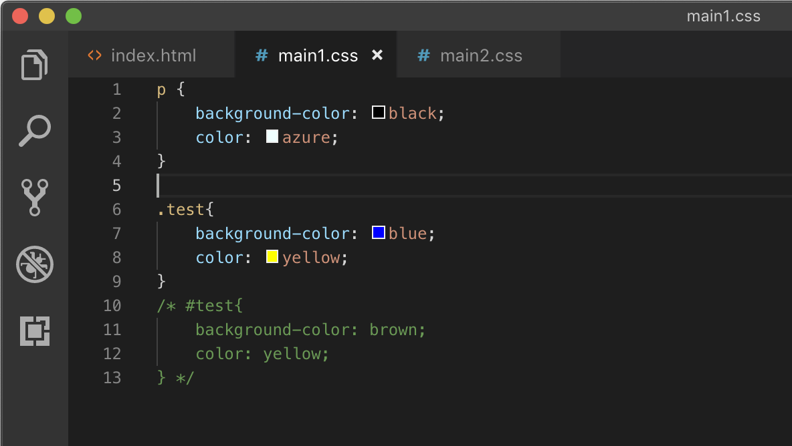
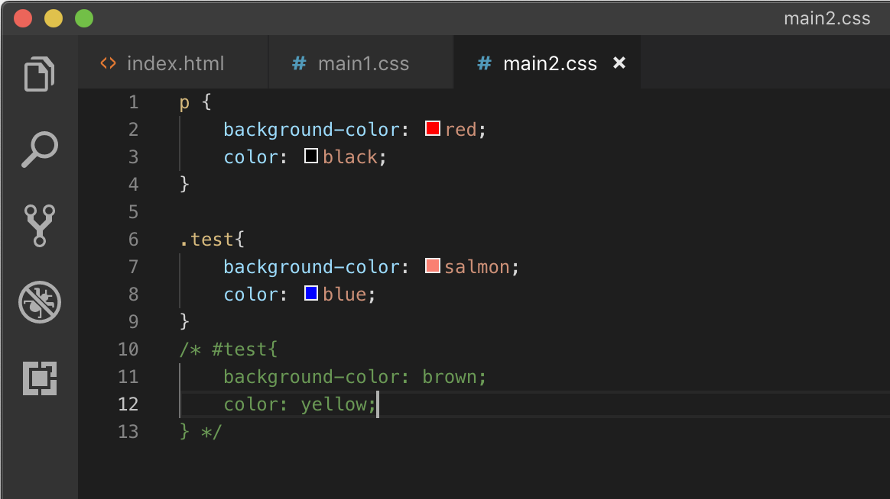
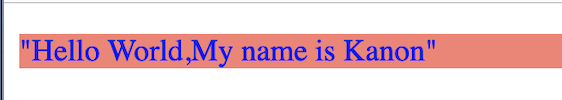
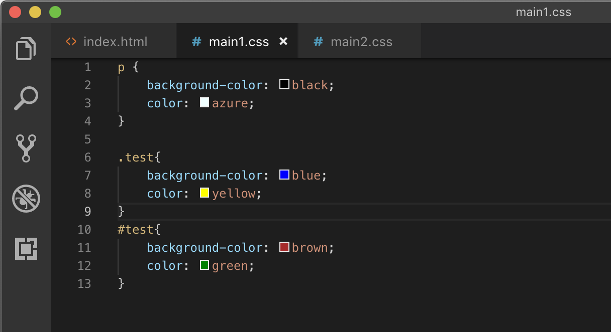
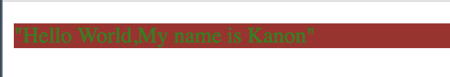
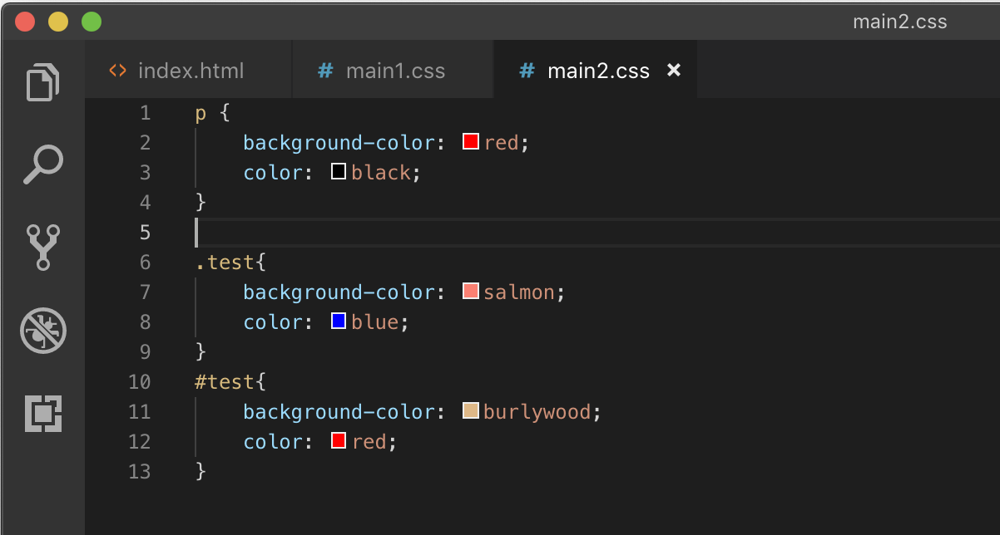
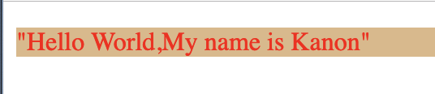

ในส่วนของ head section จะเห็นว่ามีการเชื่อมโยง external css main1.css และ main2.css
โค้ดในส่วนของ main1.css
โค้ดในส่วนของ main2.css
ผลลัพธ์จากการทำงานของ index.html จะเห็นได้ว่านำสีของ main2.css มาใช้งาน
เพราะ selector เดียวกันจะเลือก apply declaration ที่อยู่ล่างสุด

โค้ดในส่วนของ main1.css เปลี่ยนให้มีการใช้ class selector

จะได้ผลลัพธ์ ตาม class ของ main1.css เพราะ จะเลือก class selector ก่อน tag
โค้ดในส่วนของ main2.css เปลี่ยนให้มีการใช้ class selector
จะได้ผลลัพธ์ ตาม class ของ main1.css เพราะ selector เดียวกันจะเลือก apply declaration ที่อยู่ล่างสุด
โค้ดในส่วนของ main1.css เปลี่ยนให้มีการใช้ ID selector
จะได้ผลลัพธ์ ตาม ID ของ main1.css เพราะ จะเลือก ID selector ก่อน class selector และ tag
โค้ดในส่วนของ main2.css เปลี่ยนให้มีการใช้ ID selector
จะได้ผลลัพธ์ ตาม ID ของ main2.css เพราะ selector เดียวกันจะเลือก apply declaration ที่อยู่ล่างสุด